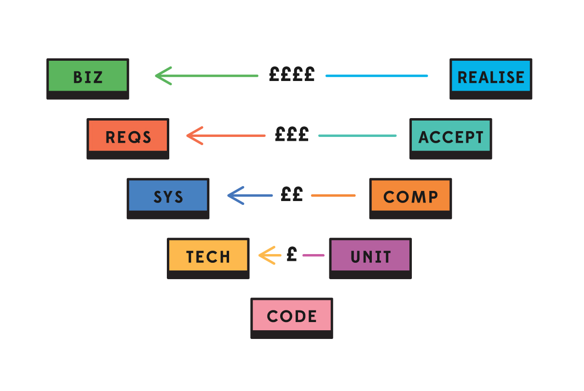

The testing world is pretty big, so here’s where we sit:
Know that this is?

Its a brake release spring off a bike. Its small but important because it releases your brake when you release the lever. You could say its a unit because we can’t break it down any more. Its not dependent on any other parts and its easily tested in isolation.
Unit tests verify individual components of a complex system. A unit can be tested independently of the other parts of the system. These tests are cool because they let us know whether each of the the small parts of a system work in isolation. The tests can be run quick and efficiently by computers.
Unit test Pass -> We know the small parts work in isolation Unit test Fail -> We know which small parts have failed. We can fix them and run again.
This is a brake from that bike. The spring above is part of this brake, but the brake has a lot of other small parts too. A brake is a component of a bike.
Any given system has lots of components. There’ll likely be components within components, and there will certainly be joining up of components (integration). Components need testing and so do the interfaces between them.
Component test pass -> This component works, but what about its interfaces between components? Component test fail -> Which part of component failed? Lets go back and check the unit tests
Here is a system. In our case its a bike.


What will a user of this system care about when they want to use it? It’s likely they'll care about what it does rather than the parts its made from.
The behaviours of the bike are therefore a good way to test this. Everybody knows what I bike should do - you don’t need to one a bike mechanic. This is where behavioural testing comes in.
Such tests are comes not from independence but from interdependence of parts working together.
Behavioural test pass -> This behaviour is as we want it Behavioural test fail ->
Proportion: Most Unit tests, less Component tests, less Behavioural tests
Here’s why behavioural testing is important.
Requirements get verified by Acceptance tests System specifications get verified by Component tests Technical specifications get verified by Unit tests See the top line - Business Case gets verified only by Realisation
This diagram outlines the relative cost in finding something wrong. Late is expensive! Its best to iron out kinks as early as possible.
